Getting Started with Raspberry Pi OS
What You'll Need:¶
-
A Raspberry Pi 4 or 5 device.
-
A high-speed Micro SD card with a capacity of 64GB or more.
-
Speed Class: Class U3 Recommended.
-
Sandisk Extreme/Extreme Pro/Extreme Plus
-
Samsung Evo Plus/Evo Select
-
Kingston Canvas Select Plus/Canvas Go! Plus
-
-
Capacity: A minimum capacity of 64GB is preferred. 128GB is ideal
-
-
A computer with an SD card reader or SD card to USB adapter.
Step 1: Installing the Raspberry Pi OS¶
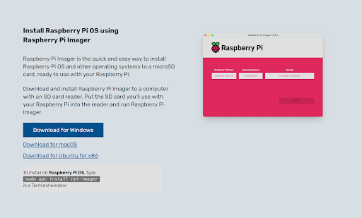
-
Download the Raspberry Pi Imager: This software helps you set up the Raspberry Pi OS onto your SD card. You can find it by searching "Raspberry Pi Imager" online. Follow the link from the official Raspberry Pi website to download and install it.
-
Prepare Your SD Card: Insert your Micro SD card into your computer's SD card reader slot.
-
Launch the Raspberry Pi Imager: Open the application you just installed.
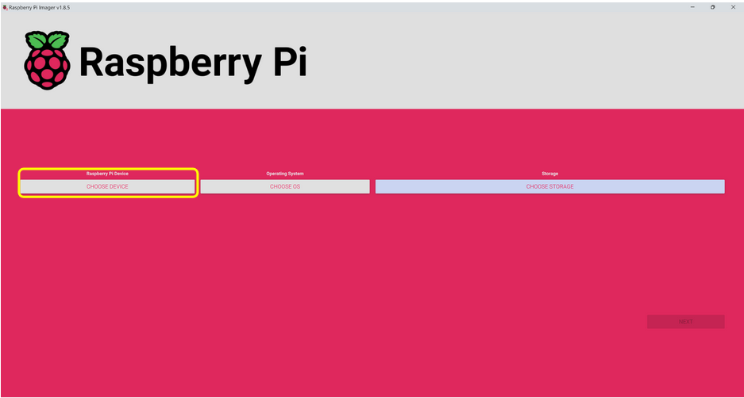 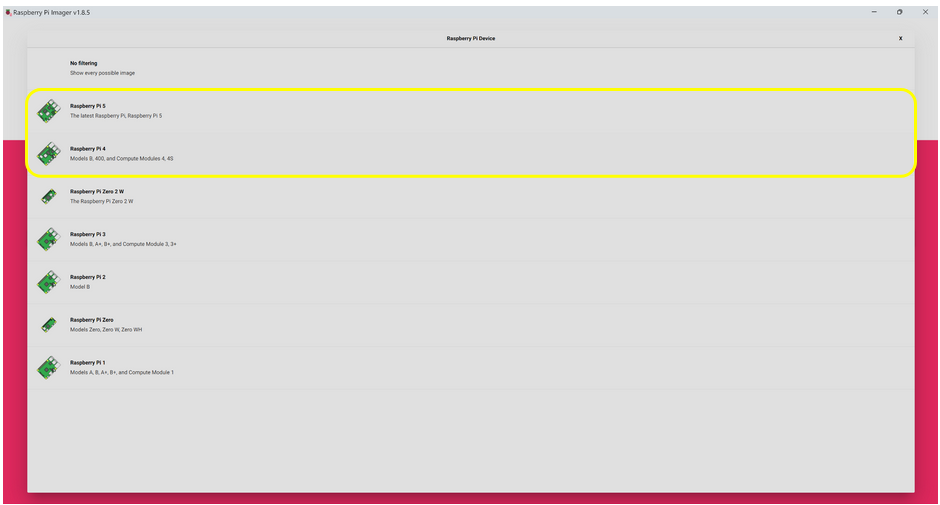
- Select Your Device: In the app, you'll see a "Choose OS" option. Since we're focusing on Raspberry Pi 4 and 5, ensure you select an option compatible with these models.
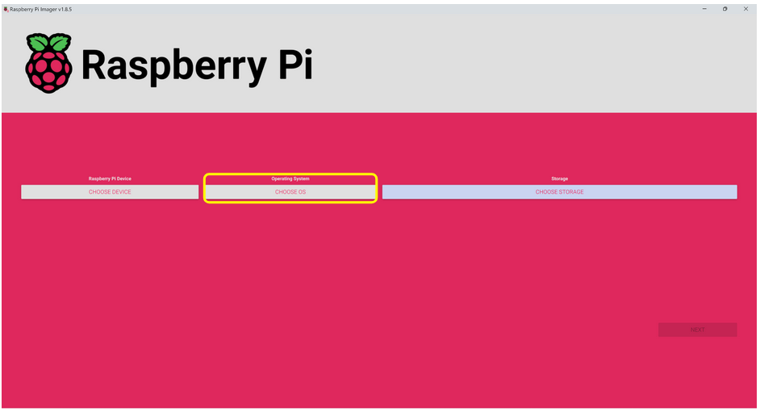 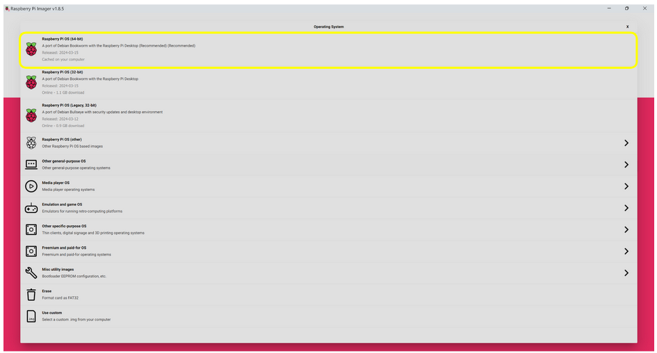
- Pick the Operating System: Choose "Raspberry Pi OS (64-bit)" from the list. As of this writing, the latest version is called "Raspberry Pi Bookworm."
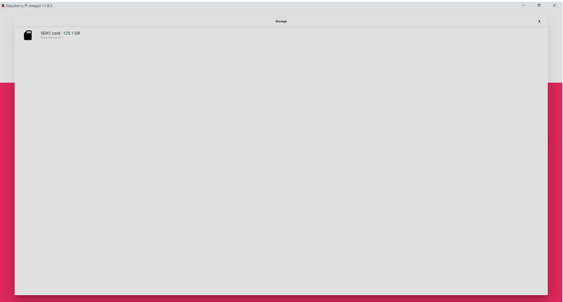
- Choose the SD Card: Under "Storage," select the Micro SD card you inserted.
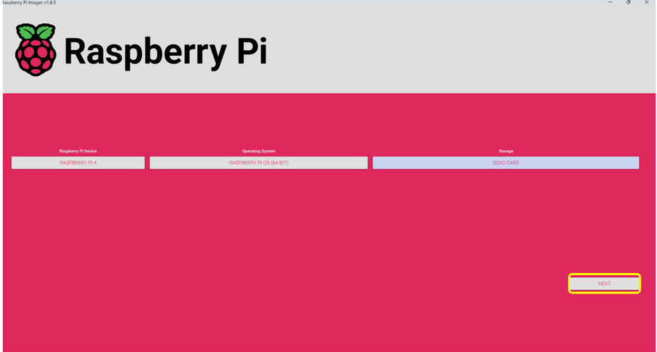 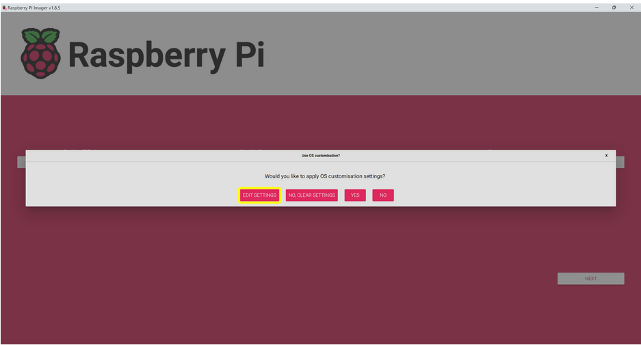 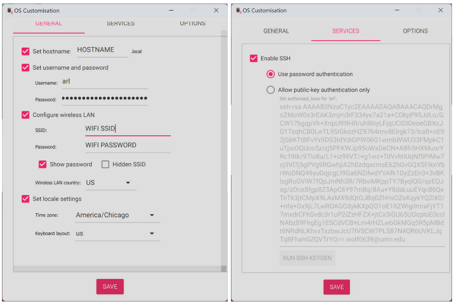
-
Edit Settings Before Installation:
-
Click "Next," then "Edit Settings."
-
Hostname: This is your Raspberry Pi's name on a network, helping you identify it. Create a unique name by adding your initials or a group name to "donkeycar-" (e.g., "donkeycar-JD"). Write this name down as you'll need it later.
-
Username and Password: Create a username and password you'll remember. Example: Username: donkeycar, Password: raspberry. Note these down.
-
Wireless LAN: Enter your WiFi's name (SSID) and password here.
-
Local Settings: Your time zone and keyboard layout are usually set automatically, but double-check to make sure they're correct.
-
SSH: Enable SSH and select "Use password authentication." SSH allows you to connect to your Raspberry Pi remotely.
-
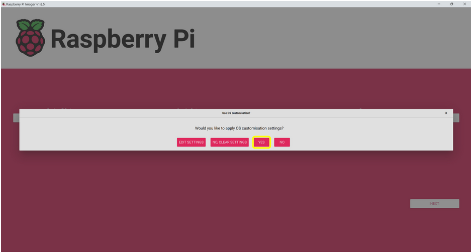 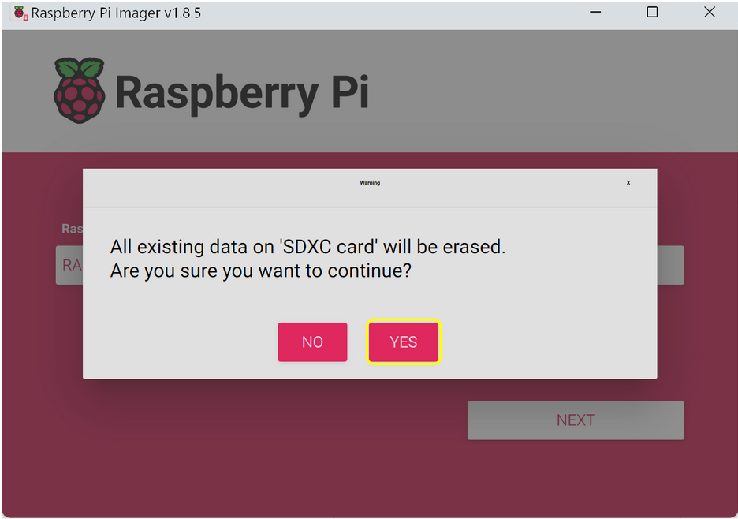
- Write and Eject: Save your settings, confirm to write the OS to your SD card, and then safely eject the SD card from your computer.
Step 2: Booting Up Your Raspberry Pi¶
-
Insert the Micro SD Card into Your Raspberry Pi:
-
Look for the Micro SD card slot on the Raspberry Pi. It's usually on the underside of the board.
-
Gently insert the Micro SD card into the slot. Make sure the metal contacts on the card face downwards and towards the Raspberry Pi. You should feel a slight click when it's in place.
-
-
Powering On Your Raspberry Pi:
-
Grab a USB-C cable. This is the Raspberry Pi's power cord, similar to a charger for many modern smartphones.
-
Connect one end of the USB-C cable to your Raspberry Pi and the other end to a power source (like a USB plug adapter or a powered USB port on a computer).
-
Once connected, your Raspberry Pi will start to boot up. You won’t need to press any buttons to turn it on, just giving it power is enough!
-
Step 3: Connecting to Your Raspberry Pi¶
To interact with your Raspberry Pi, you have two main options: connecting through SSH (Secure Shell) for remote access or hooking it up directly with a monitor, keyboard, and mouse. Here's how to do both:
Option 1: Direct Connection¶
- Direct Setup: Simply connect your Raspberry Pi to a monitor using an HDMI cable, and plug in a USB keyboard and mouse. This method is straightforward and lets you work with the Pi as if it were a regular desktop computer.
Option 2: Remote Connection via SSH¶
-
What is SSH?: SSH stands for Secure Shell. It's a secure method to remotely access another computer's command line interface. This is useful if you can't or don't want to connect a monitor and peripherals directly to the Pi.
-
Setting Up SSH:
-
Enable SSH on Your Raspberry Pi: This can usually be done from the Raspberry Pi's configuration settings. You might need to do this with a monitor and keyboard attached if you're setting up the Pi for the first time.
-
Find Your Pi's Address: You need to know your Raspberry Pi's IP address or hostname to connect to it. If you're on the same network, the hostname is often raspberrypi.local, unless you've changed it.
-
Connect from Your Computer:
-
Open the Terminal application on your computer. This is Command Prompt on Windows or Terminal on macOS and Linux.
-
Type the SSH command:
ssh username@hostname.local, replacing username with your Raspberry Pi's username (the default is pi) and hostname with your Pi's actual hostname or IP address. For example, if your username is pi and your hostname hasn't been changed, you'd typessh pi@raspberrypi.local.SSH Commandssh username@hostname.local -
Press Enter. The first time you connect, you'll be asked if you trust the connection. Type yes, then enter your Raspberry Pi's password when prompted.
-
-
Step 4: Updating Your Raspberry Pi¶
In this step, you're going to make sure your Raspberry Pi has the latest software. This is a bit like ensuring your smartphone installs the latest updates to run smoothly and securely. First, you'll need to connect your Raspberry Pi to a monitor and keyboard (or access it remotely if you know how). Once that's done, you'll use something called the command line, which is a way to interact with your Raspberry Pi by typing commands. Here’s how to get your Raspberry Pi updated:
-
Open the Terminal: This is where you'll type your commands. It's a window where you can tell your Raspberry Pi what to do without using the mouse.
-
Type the Update Commands: You will need to type two commands into the terminal. Here's what they are and what they do:
-
sudo apt update: This command checks for updates. It's like asking, "Is there anything new that I should know about?" It doesn’t install the updates; it just looks for them and prepares a list.Update Version Historysudo apt update -
sudo apt upgrade: After checking for updates, this command installs them. It’s like saying, "Okay, now that we know what’s new, let’s get it installed."Update Packagessudo apt upgrade
-
Step 5: Configuring Your Raspberry Pi¶
-
Use the command
sudo raspi-configto open the configuration utility.Configure System Settingssudo raspi-config-
System Options: In the System Options menu, you'll find settings that affect the whole system. Here are a few key ones you might want to adjust:
-
Change Password: It's a good idea to change the default password to keep your Raspberry Pi secure.
-
Hostname: This is your Raspberry Pi's name on a network. You can change it to something unique to easily identify your device.
-
WiFi Network: Here, you can switch the WiFi network your Raspberry Pi connects to. This is useful if you're moving your device to a different location or if you need to connect it to a different network.
-
-
Interface Options:
-
Enable VNC: Turning this on allows you to control your Raspberry Pi from another computer as if you were sitting right in front of it. It's like having a remote desktop.
-
Enable I2C: This option turns on the ability for your Raspberry Pi to talk to certain other hardware pieces, like a PWM (Pulse Width Modulation) chip. PWM chips are used to control motors and servos, letting your projects move.
-
-
Advanced Options:
- Expand Filesystem: This option makes sure that the Raspberry Pi uses all the space available on the SD card. It's like telling the Raspberry Pi, "Hey, feel free to stretch out and use all the room you have." This is especially important if you've got a larger SD card to give you plenty of space for projects.
-
-
Reboot your Raspberry Pi as prompted
- After making all your changes, you'll need to restart your
Raspberry Pi. You might see a prompt asking you to do this. If
not, you can always restart it by typing
sudo rebootinto the terminal. This makes sure all your settings take effect.Reboot Raspberry Pisudo reboot
- After making all your changes, you'll need to restart your
Raspberry Pi. You might see a prompt asking you to do this. If
not, you can always restart it by typing
Step 6: Setting Up Python Environment¶
In this step, we'll create a special workspace on your computer where you can write and run Python code. This workspace is known as a Virtual Environment. Think of it as your personal lab where you can experiment with Python projects without affecting the rest of your computer's setup.
Create a Virtual Environment¶
A Virtual Environment is like a sandbox for your project. It keeps all the tools and materials (in our case, code and libraries) you need separate from other projects. This way, if one project needs a specific tool version, it won't clash with another project's needs.Here’s how you set it up:
-
Open your Terminal or Command Prompt: This is where you type commands to talk directly to your computer.
-
Create the Virtual Environment: Type the following command and press Enter:
-
Create the enviroment.
Create Virtual Enviromentpython3 -m venv donkey --system-site-packages -
You can replace donkey with any name you like, but using donkey here makes it easier to follow along with later parts of this course that use a system called Conda on Linux computers.
-
The
--system-site-packagesoption allows this environment to access some Python packages already installed on your computer globally, saving space and time.
-
-
Activate Your Environment: To start using your newly created environment, you need to activate it. Type the commands below:
Activate Virtual Enviromentecho "source ~/donkey/bin/activate" >> ~/.bashrc source ~/.bashrcThis tells your Terminal to always use your donkey environment by default, making things simpler for future projects.
Install Required Libraries¶
Before you can start building projects, you need some tools and materials, known in Python as libraries.
-
Install System Libraries: Some Python libraries depend on non-Python code. To prepare for this, install the required system library by typing:
Install DependenciesNote: This command might ask for your password. It's the same one you use to log into your computer.sudo apt install libcap-dev -
Install Python Packages: Now, let's get the specific Python packages you'll need.
-
For most users, type:
Install Donkey Car Softwarepip install donkeycar[pi] -
For developers, there's a more detailed setup. Please see Appendix 2 in our course materials.
-
Verify Installation¶
Let's make sure everything is set up correctly by checking if a key library, TensorFlow, is installed. TensorFlow is a powerful tool for machine learning projects. Type the following command and press Enter:
python -c "import tensorflow; print(tensorflow.version)"
Note: If you see a version number appear, congratulations! You're all set up and ready to dive into Python and machine learning projects.